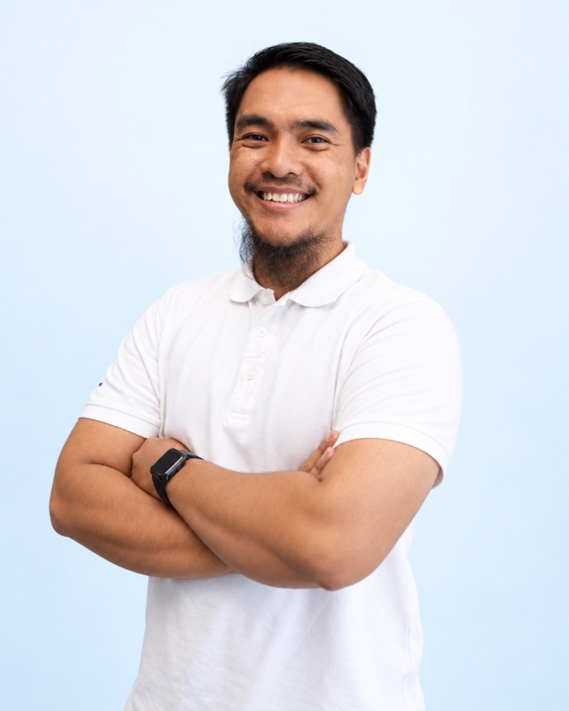
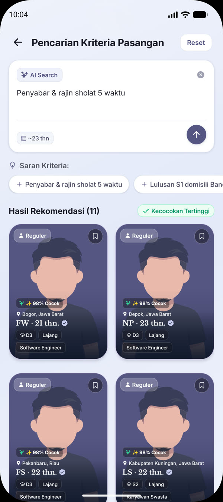
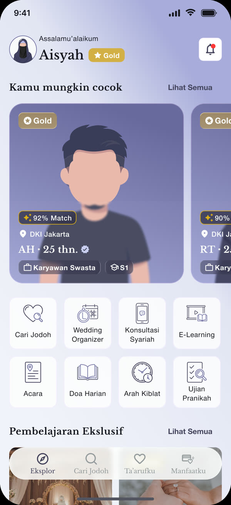
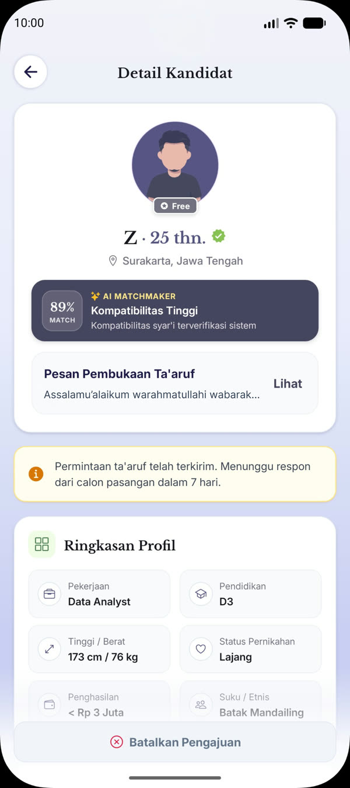
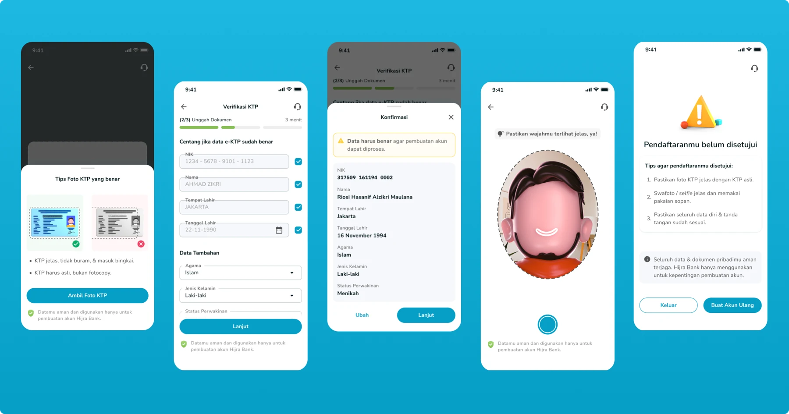

Siiru product film
The Indonesia edition in English. The same project renders Malaysia in English and Malay, Indonesia in Bahasa and Singapore, with prices inside the app recordings rewritten in each currency.
Senior product designer in Jakarta. I design products people trust with their money and their journeys.
Seven years across Islamic banking, Umrah travel, ta'aruf and SaaS procurement. Currently at Siiru, and a mentor to the designers I work with.

Five projects, each with the problem, my role, the decisions that mattered and what changed after launch.
I design Siiru's app for pilgrims in Malaysia, Indonesia and Singapore. It brings 17 services together, from daily prayer and giving to booking guides, rides and insurance.
My part: I designed most of the app's core flows and own its final visual style and design decisions, across app and web. I also made the product film, mentor a junior designer and run design critiques.
Read the case studyAn app that helps Muslims find a spouse through ta'aruf, the Islamic way of getting to know someone for marriage. Its flagship is an AI matchmaker: describe who you hope for in your own words and get ranked, verified matches.
My part: I designed the whole app, from the AI matchmaker to verification, membership and the wedding organizer, and made its films.
Read the case study


Three iterations of Hijra's ID check. Clearer capture guidance and an explicit review step moved more sign-ups to automatic approval.
My part: I owned all three iterations, from capture guidance to review and recovery, working with the PM, engineers, operations and compliance.
Read the case study
Hijra's home screen had grown crowded as teams added features. I rebuilt its hierarchy around the actions and benefits customers use most.
My part: I reshaped the information hierarchy, designed the new homepage and facilitated four rounds of critique with people from several divisions to agree on it.
Read the case study
While banking features waited for approval, research led us to everyday Islamic lifestyle features that made Hijra useful from the first day.
My part: I helped turn interview insights into the product direction, then designed the lifestyle features with product and business development.
Read the case study
Eight screens from the Siiru app, recorded from the live product. Most of these flows are my designs, and I set the final visual style for all of them. Choose one to see what it does and the decision behind it.
The home screen leads with what a Muslim needs today: the next prayer time and an AI assistant for travel questions. Services sit one tap below.
An app people open every day is already trusted when they start planning a trip.
Each guide card shows years of experience, city, languages, rating, wheelchair support and a starting price, with Quick Book on the card itself.
People compare guides without opening every profile. I wrote a think-aloud usability test with SUS scoring for this flow.
Cars are listed by seats and luggage space before price, with a certified driver badge on every option.
Pilgrims travel as families with heavy bags, so capacity decides the booking.
A few plain questions replace an empty prompt. While the plan is built, the app shows what it is doing: finding places in Madinah, fitting prayer times, planning the route.
Guided input gives better results, and visible steps make the plan easier to trust. Planning a DIY Umrah can otherwise take 40 to 60 hours.
The claim is the starting point. Active protection, the claim deadline and three steps (choose, fill in, submit) are on the first screen.
People file claims while stressed and far from home.
Each gift is a concrete item with a price, such as an iftar food pack at Masjidil Haram, with a single Donate button.
A specific gift is easier to decide on than an open amount.
Pilgrims create a dua folder, and friends and family add their duas through a WhatsApp link.
It builds on a tradition people already practise, and every shared link brings someone new to the app.
Seventeen services are grouped by what people want to do: worship, travel and protection, with New and Soon labels.
The catalogue can keep growing without becoming hard to scan.
I direct and build product films in Remotion, so each video is a React project that renders every language its market needs.
The Indonesia edition in English. The same project renders Malaysia in English and Malay, Indonesia in Bahasa and Singapore, with prices inside the app recordings rewritten in each currency.
The English edition of a film made in Indonesian, English and Arabic, which reads right to left. A 45-second vertical promo for Reels and TikTok came from the same project.
Most of my leadership happens in critique, in one-on-ones and in the decisions a team has to agree on. Here is what that looks like in practice.
At Hijra, my lead and several teammates disagreed with my design for the homepage balance section. I made the case with concrete reasoning and a side-by-side comparison of the expected impact of each option, and the team agreed to go with it.
I facilitated four rounds of critique with people from several divisions to settle the full homepage order. The redesign lifted monthly transactional users by 12%.
One junior designer I mentored started with an outdated visual style, slow output and rushed analysis. We met weekly one-on-one; I set tasks and exercises aimed at each gap, gave feedback and shared stories from my own experience, and added a monthly team checkpoint so everyone could see their progress and pace.
Within three months, the change in their work was significant. I mentor one designer at Siiru, two at Muhajir Project, and guided four groups of six at Skilvul.
At Siiru, every new design or iteration goes through critique with developers, the PM and the leadership team. The booking flow is one design that changed because of these sessions.
I have also interviewed and hired designers, built a design system, and set up a team's design process and day-to-day workflow.
AI gets me from an idea to something people can try, faster. It drafts; I decide, and I check every number against its source. Confidential user and company data stays out of public tools.
| Stage | AI helps me | I decide |
|---|---|---|
| Research | Group interview notes, support tickets and app reviews into themes. | Which themes hold up against the raw quotes, and which problem to solve. |
| Framing | Draft PRDs, flows and edge cases in English and Bahasa Indonesia. | Scope, success measures and trade-offs, agreed with the team in critique. |
| Prototyping | Turn designs into working code in hours. | Interaction details and accessibility, tested on real devices. |
| Storytelling | Voice-over, translation and video rendering. | The story, the pacing and what to leave out. |
I'm Ridwan, a senior product designer in Jakarta. I've spent seven years on products where trust matters most: Islamic banking at Hijra, Umrah travel at Siiru, ta'aruf at Mahabbati and B2B procurement at ProcurA.
I work closest with product managers and engineers. I like to frame the problem early, test with real users and ship the simplest thing that works.
I also mentor designers: one junior designer at Siiru, two at Muhajir Project and four groups of six at Skilvul. I have interviewed and hired designers, built a design system and set up how a design team works, down to its daily workflow.
Master's in Information Technology, Universitas Nasional (2022 to 2024). Bachelor's in Information Technology (2016 to 2020).
Two peer-reviewed papers: RESHOT, for simpler user experiences (JUITA, 2023) and sentiment analysis for Hijra's UX research (SAGA, 2024).
Judge at the COMPFEST 16 UX Academy, Universitas Indonesia, 2024 (certificate).
| Product Designer, freelance Mahabbati, ta'aruf app | 2026 |
| Senior UI/UX Designer Siiru Tech, Muslim travel | 2025 to now |
| Principal UI/UX Designer Muhajir Project, concurrent role | 2024 to now |
| Product Manager HSI, Shortener module | 2024 to 2026 |
| Senior Product Designer Hijra, digital banking platform | 2024 to 2025 |
| Product Designer Hijra, acquisition and engagement | 2021 to 2024 |
| Product Development Mentor Skilvul | 2022 |
| UI/UX Designer Lead Muslimroom | 2020 to 2021 |
| UX Designer, freelance FishGo Indonesia | 2020 |
| UI/UX Designer ProcurA, SaaS e-procurement | 2019 to 2021 |
| Android Developer Ministry of Public Works and Housing | 2019 |